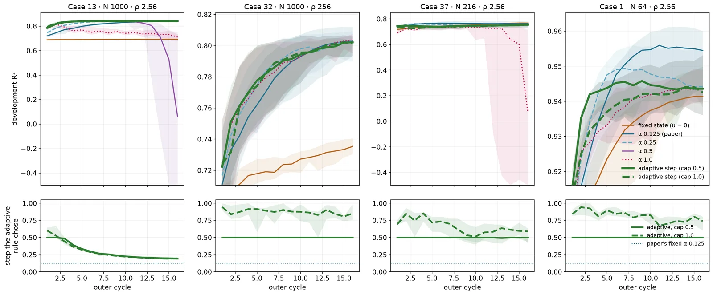
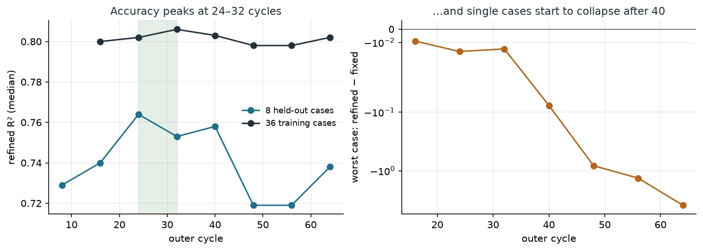

Entry
The one-particle flow surrogate has an outer loop: every particle's state is moved toward the slip implied by the flow its neighbours induce, q ← (1 − α) q + α (q_base − ũ). That is a damped fixed-point iteration, and fixed-point iterations come with a large toolbox for choosing α. This post is about how little of that toolbox survived contact with a model that is still learning.
Bigger and adaptive steps arrive sooner, not higher
The original setup used a constant α of 0.125. Larger constant steps (0.25, 0.5, 1.0) and an adaptive rule that probes the residual and picks its own step all reach good accuracy sooner in the dense cases.

None of them ends higher. By cycle 16 no rule beat α 0.125 by more than 0.0015, and the large steps collapsed outright on some cases (α 0.5 on Case 13, α 1.0 on Case 37). A wider study on eight cases with four labels each tested probing, Armijo-safeguarded probing, schedules that start large and shrink, and Anderson mixing. Anderson was the clearest failure: it underperformed even the fixed state on some cases. Every rule that starts large or probes upward damaged at least one fragile case, and a smaller constant step, α 0.0625, was the most robust.
The reason is structural. Adaptive step rules and Anderson acceleration estimate the local behaviour of the map from recent iterates. During training the map is the network, and the network changes every cycle, so that history describes a map that no longer exists. Stochastic-approximation theory has said for decades what to do in that situation: take small steps, and shrink them.
How long to train
Past 16 cycles a constant step started to fail. Across all 72 per-case runs at 32 cycles, 18 ended below their own fixed-state baseline. A step that decays geometrically from 0.0625 to 0.01 cut that to 6, at the same median accuracy.

The shared model, trained on all cases at once, was more stable: no collapse to 32 cycles, and the decaying step cost a little accuracy there instead of helping. Run to 64 cycles, though, it showed the same failure later. The median stayed near 0.80 while single cases fell, the worst to −3.9. We stop at 32 cycles.
At inference, the map stands still
Once training is over the network is fixed, and the state iteration becomes a genuine fixed-point problem. That is exactly where the toolbox applies: Aitken (Irons–Tuck) relaxation, the standard adaptive choice in coupled fluid-structure solvers, and Anderson mixing, known in quantum chemistry as Pulay or DIIS. So we froze a shared model and refined the states of four cases it had never seen, from the starting state, with constant steps, Aitken and Anderson.
They worked as advertised on the residual. On three of the four cases, Anderson and the larger constant steps drove it down by three to seven orders of magnitude. And the predictions got worse. The exact fixed point scored 0.63 on Case 13 (the slow constant step peaked at 0.83), 0.72 on Case 3 (0.81 on the way), and −0.7 on Case 32 (0.74 on the way). Aitken reached its plateau in about two steps and stayed there, a little below the slow step's peak, because its step shrank before it could finish converging.
Why the fixed point is not the answer
During training the network only ever sees partly converged states: 16 to 32 small steps from the starting state, interleaved with weight updates. It learns to predict well from states of that kind. The exact fixed point of the trained network is a state it has never been trained on, so converging to it is a step out of distribution. The manuscript we are writing anticipated a version of this: state convergence and prediction accuracy need not share an optimum. At inference they demonstrably do not.
The practical rule is simple: at inference, reproduce the training-time schedule rather than iterating to convergence. The research direction is more interesting. If the network were trained at its own fixed point, through a consistency term or by unrolling the state iteration inside training, then converging would also mean predicting well, inference would be well defined, and the acceleration methods that failed here would become useful. That is the next experiment.